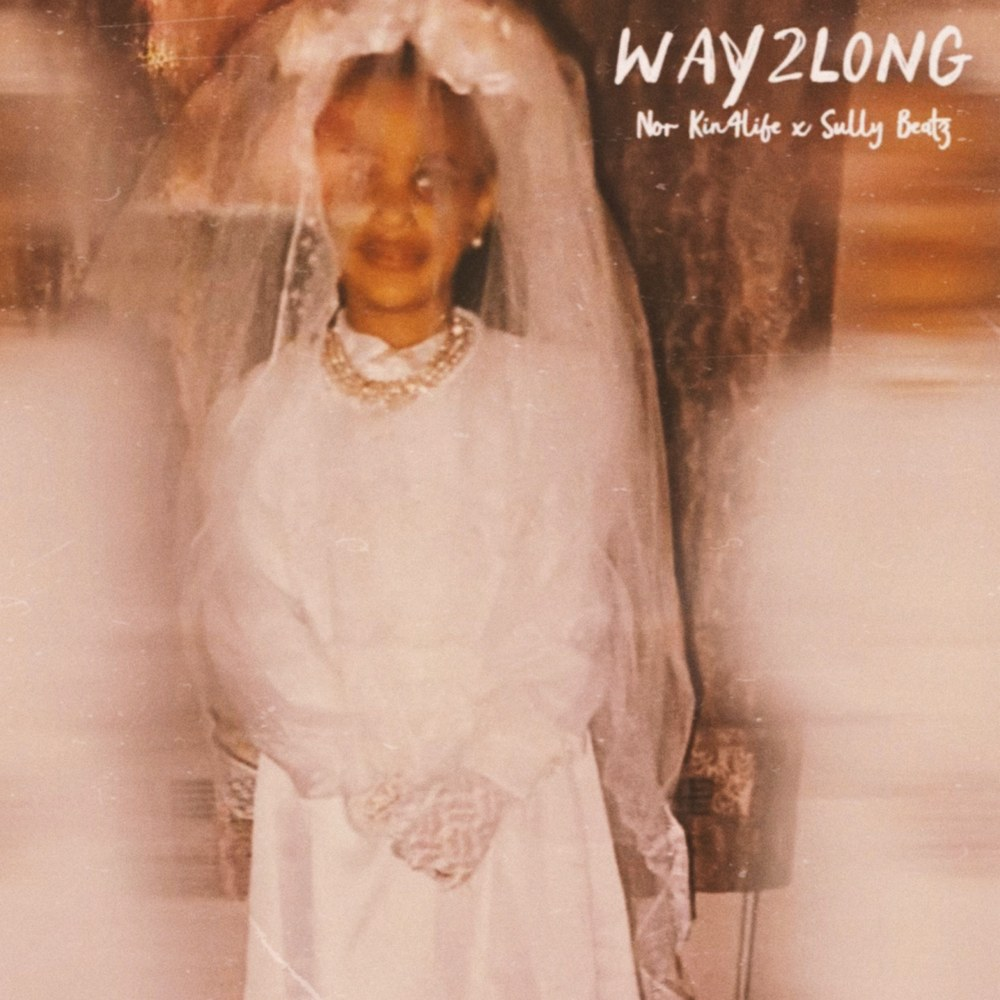

Best Melodic Rap Performance
WAY2LONG
Nor Kin4life x Sully Beatz
- Lyrics
- Nor Kin4life
- Produced by
- Sully Beatz
Mount Vernon, NY singer, songwriter, emcee and producer.
All three entries. Press play on any track.

Nor Kin4life x Sully Beatz
Nor Kin4life x Tommy Danger
Leash Da Beaast x Nor Kin4life
Nor Kin4life is HIP POP: old-school roots, new-school flows. A singer, songwriter, emcee and producer from Mount Vernon, New York, she first rocked stages coast to coast as one half of the Hip Hop duo KIN4LIFE, from the Knitting Factory in New York City to the Hard Rock Cafe in the Dominican Republic. Going solo, she took her music to screens everywhere: “Full Speed” landed on Netflix’s Rhythm & Flow, Keeping Up With The Kardashians and the League of Legends video game, and “S.O.S” on The CW’s All American. She has collaborated with KRS-One, Monifa and Caddy Pack, and draws from Lauryn Hill, Jay-Z, Prince and Britney Spears. She also produces The Seasoning series and is a Recording Academy voting member.